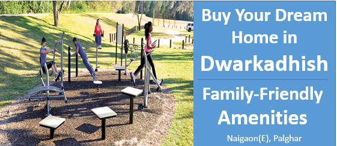

अपने सपनों का घर खरीदें द्वारकाधीश में:2024 में अपार्टमेंट्स के लिए 10 सबसे अच्छी परिवारिक सुविधाएँ
जैसे-जैसे शहरी जीवन बदल रहा है, स्मार्ट अपार्टमेंट्स रहवासियों के लिए एक आरामदायक, सुविधाजनक और समुदाय से जुड़ा हुआ विकल्प बनते जा रहे हैं। 2024 में, इन अपार्टमेंट्स को ऐसी उच्च गुणवत्ता वाली सुविधाओं पर ध्यान देना चाहिए जो विभिन्न जरूरतों को पूरा करें, जैसे उन्नत तकनीक और स्थिरता। सही सुविधाएँ जीवन के अनुभव को बेहतर बना सकती हैं, जिससे रोज़मर्रा की ज़िंदगी को आसान, सुरक्षित और जुड़ा हुआ बनाया जा सकता है। यह ब्लॉग उन 10 महत्वपूर्ण सुविधाओं पर प्रकाश डालता है जो हर स्मार्ट अपार्टमेंट में आधुनिक जीवन के लिए होनी चाहिए।
अपार्टमेंट के लिए जरूरी सुविधाएँ
स्मार्ट अपार्टमेंट्स उन सुविधाओं से पहचाने जाते हैं जो वे प्रदान करते हैं, जिससे रोज़मर्रा की ज़िंदगी एक शानदार अनुभव बन जाती है। जरूरी सुविधाएँ जैसे बाग़, योग स्पेस, क्रिकेट टर्फ, जॉगिंग ट्रैक, बच्चों के खेलने के क्षेत्र, और बाहरी जिमनाजियम्स सेहत, मनोरंजन और समुदाय को बढ़ावा देती हैं। ये सुविधाएँ निवासियों की भलाई को बढ़ाती हैं और एक अधिक जुड़ी हुई, सक्रिय जीवनशैली को बढ़ावा देती हैं। आइए जानते हैं वे जरूरी सुविधाएँ जो आधुनिक अपार्टमेंट्स को परिभाषित करती हैं।
बच्चों का खेल क्षेत्र
बच्चों वाले परिवारों के लिए एक अच्छे से सुसज्जित किड्स फन ज़ोन एक जरूरी सुविधा है। इस स्थान में बच्चों को व्यस्त, सक्रिय और मनोरंजन करने के लिए झूलों, स्लाइड्स और इंटरएक्टिव खेलों जैसे विभिन्न खेल उपकरण होने चाहिए। सुरक्षा सबसे महत्वपूर्ण है, इसलिए खेल क्षेत्र में मुलायम फर्श, सुरक्षित बाड़ और उम्र के हिसाब से डिज़ाइन होना चाहिए। खेल के अलावा, एक सोच-समझकर डिज़ाइन किया गया बच्चों का क्षेत्र माता-पिता के लिए भी एक बैठक स्थल प्रदान करता है, जिससे वे एक दूसरे के साथ सामाजिक जुड़ाव कर सकते हैं और दूसरे परिवारों से मिल सकते हैं, जिससे अपार्टमेंट परिसर में एक मजबूत समुदाय की भावना बनती है।
बाहरी जिम
आधुनिक अपार्टमेंट्स में बाहरी जिमनाजियम्स एक बहुत लोकप्रिय सुविधा बनते जा रहे हैं, जो निवासियों को फिटनेस और प्रकृति का बेहतरीन मिश्रण प्रदान करते हैं। इन जिम्स में मजबूत, मौसम-रोधक व्यायाम मशीनें जैसे रेसिस्टेंस ट्रेनर्स, पुल-अप बार्स और कार्डियो स्टेशन होते हैं, जो खुले माहौल में विभिन्न कसरत विकल्प प्रदान करते हैं। ये न केवल शारीरिक स्वास्थ्य को बढ़ावा देते हैं, बल्कि समुदाय की भावना को भी प्रोत्साहित करते हैं, क्योंकि निवासी बाहर व्यायाम करते हुए आपस में बातचीत कर सकते हैं। ताजे हवा और प्राकृतिक वातावरण के साथ, बाहरी जिमनाजियम्स एक ताजगी देने वाला फिटनेस अनुभव प्रदान करते हैं, जिससे निवासियों के लिए सक्रिय और स्वस्थ रहना और भी आसान और मजेदार हो जाता है।
जॉगिंग ट्रैक
समर्पित जॉगिंग ट्रैक आधुनिक अपार्टमेंट्स में एक महत्वपूर्ण सुविधा है, जो निवासियों के बीच एक सक्रिय और स्वस्थ जीवनशैली को बढ़ावा देती है। इन ट्रैकों को सुरक्षा और पहुंच को ध्यान में रखते हुए सोचा-समझा डिज़ाइन किया जाना चाहिए, ताकि सभी स्तरों के धावकों और जॉगर्स के लिए एक चिकना और अच्छी तरह से बनाए रखा गया मार्ग प्रदान किया जा सके। रास्ते के साथ हरे-भरे पौधे और बागवानी जोड़ने से बाहरी अनुभव को और बेहतर बनाया जा सकता है, जिससे एक शांत और सुंदर वातावरण बनता है। बाहरी फिटनेस को प्रोत्साहित करके, जॉगिंग ट्रैक न केवल निवासियों को फिट रहने में मदद करते हैं, बल्कि प्रकृति से जुड़ने का भी एक अवसर प्रदान करते हैं, जिससे व्यायाम और भी आनंदमय और ताजगी देने वाला बन जाता है।
जॉगिंग ट्रैक
एक समर्पित योग और ध्यान क्षेत्र हर आधुनिक अपार्टमेंट के लिए एक जरूरी सुविधा है, जो निवासियों को योग, ध्यान और मानसिक भलाई पर ध्यान केंद्रित करने के लिए एक शांतिपूर्ण वातावरण प्रदान करता है। विश्राम और मानसिक शांति को बढ़ावा देकर, ये स्थान समग्र स्वास्थ्य अनुभव को काफी बढ़ाते हैं, जिससे यह सुविधा उन लोगों के लिए अनमोल बन जाती है जो एक संतुलित और समग्र जीवनशैली का पालन करना चाहते हैं। द्वारकाधीश इस सुविधा की महत्ता को समझता है और सोच-समझकर एक खूबसूरती से डिज़ाइन किया गया योग डेक शामिल किया है, जो निवासियों को विश्राम, व्यक्तिगत विकास और मानसिक ताजगी के लिए आदर्श स्थान प्रदान करता है।
मल्टी-स्पोर्ट्स टर्फ
मल्टी-पर्पस टर्फ एक अमूल्य सुविधा है जो किसी भी आधुनिक अपार्टमेंट समुदाय में जीवन अनुभव को बहुत समृद्ध करती है। यह निवासियों को खेलों और मनोरंजक गतिविधियों के लिए एक बहुपरकारी स्थान प्रदान करता है, जो शारीरिक फिटनेस को बढ़ावा देता है और संगठित आयोजनों के साथ-साथ आकस्मिक खेलों के माध्यम से समुदाय के बीच इंटरएक्शन को भी बढ़ावा देता है। ऐसे वातावरण का निर्माण करके जो सक्रिय भागीदारी और सामाजिक संपर्क को प्रोत्साहित करता है, ये सुविधाएँ एक समग्र और संतोषजनक जीवनशैली में महत्वपूर्ण योगदान करती हैं। द्वारकाधीश ने इस मल्टी-पर्पस टर्फ को सोच-समझकर शामिल किया है, यह सुनिश्चित करते हुए कि निवासियों के पास विविध मनोरंजन के अवसर हों, जो उनकी भलाई और जीवन की गुणवत्ता को समर्थन देते हैं।
वरिष्ठ नागरिक पार्क
वरिष्ठ नागरिकों के लिए एक विशेष क्षेत्र एक महत्वपूर्ण सुविधा है जो किसी भी आधुनिक अपार्टमेंट समुदाय में जीवन की गुणवत्ता को बहुत बढ़ाती है। ये स्थान वृद्धों की सुरक्षा, आराम और भलाई को ध्यान में रखते हुए डिज़ाइन किए जाते हैं, जिससे सामाजिक संपर्क बढ़ता है और एकाकीपन की भावना को कम करने में मदद मिलती है। शारीरिक और मानसिक स्वास्थ्य को समर्थन देने वाली सुविधाओं के साथ, ऐसे क्षेत्र वरिष्ठ नागरिकों को संतोषजनक और सक्रिय जीवनशैली अपनाने के लिए प्रोत्साहित करते हैं। द्वारकाधीश इस सुविधा की महत्ता को समझता है और वरिष्ठ नागरिकों के लिए एक समर्पित स्थान बनाया है, जो उनकी भलाई, सामाजिक सहभागिता और समुदाय के बीच एक मजबूत भावना को बढ़ावा देता है।
सजाया हुआ बाग़
सजाए गए बाग़ ऐसे महत्वपूर्ण तत्व हैं जो समुदाय की सुंदरता और भलाई दोनों को बढ़ाते हैं। ये हरे-भरे क्षेत्र बाहरी गतिविधियों, विश्राम और प्रकृति से गहरे संबंध के लिए अवसर प्रदान करते हैं, जिससे एक शांत वातावरण बनता है और मानसिक शांति को बढ़ावा मिलता है। द्वारकाधीश इस तरह की सुविधाओं की अहमियत को समझता है और सोच-समझकर खूबसूरती से सजाए गए बाग़ों को शामिल किया है, जिनमें एक जंगल-थीम वाला बाग़, तितली बाग़ और अरोमा पार्क शामिल हैं। ये अद्वितीय स्थान न केवल समुदाय के आकर्षण को बढ़ाते हैं, बल्कि निवासियों को एक स्वस्थ और संतुलित जीवनशैली अपनाने के लिए प्रेरित करते हैं।
सीसीटीवी निगरानी
द्वारकाधीश में, सीसीटीवी निगरानी एक महत्वपूर्ण सुविधा है जो निवासियों की सुरक्षा सुनिश्चित करती है। प्रवेश द्वार, पार्किंग क्षेत्र और हॉलवे जैसे सामान्य क्षेत्रों की 24/7 निगरानी से यह प्रणाली अपराध को रोकने में मदद करती है और संदिग्ध गतिविधि के मामले में वास्तविक समय में अलर्ट प्रदान करती है। स्मार्ट तकनीकों के साथ एकीकृत होकर, यह निवासियों को लाइव फीड्स को दूर से देखने और आगंतुकों के प्रवेश को प्रबंधित करने की सुविधा देती है, जिससे सुरक्षा और सुविधा दोनों बढ़ती है। गोपनीयता का सम्मान करते हुए कैमरे केवल सार्वजनिक स्थानों पर लगाए जाते हैं, और नियमित रख-रखाव से यह सुनिश्चित किया जाता है कि प्रणाली कुशलतापूर्वक काम करती रहे, जिससे निवासियों को मानसिक शांति और सुरक्षित रहने का वातावरण मिलता है।
सौर ऊर्जा
आधुनिक अपार्टमेंट्स जैसे द्वारकाधीश में, सौर ऊर्जा एक महत्वपूर्ण सुविधा है जो स्थिरता और ऊर्जा दक्षता को बढ़ावा देती है। सौर ऊर्जा का उपयोग करके, इमारत सामान्य क्षेत्रों जैसे कि लाइटिंग, लिफ्ट और पानी की व्यवस्था को संचालित कर सकती है, जिससे बिजली खर्च और कार्बन उत्सर्जन कम होते हैं। सौर ऊर्जा पानी गर्म करने जैसी पर्यावरणीय पहल को भी समर्थन देती है, जिससे द्वारकाधीश एक हरित और आत्मनिर्भर समुदाय बनता है। यह न केवल निवासियों को ऊर्जा बिलों में बचत करने में मदद करता है, बल्कि एक अधिक सतत भविष्य में योगदान भी करता है।
वर्षा जल संचयन
आधुनिक अपार्टमेंट्स जैसे द्वारकाधीश में, वर्षा जल संचयन एक महत्वपूर्ण स्थिरता सुविधा है जो पानी की बचत करने और बाहरी स्रोतों पर निर्भरता को कम करने में मदद करती है। छतों से वर्षा जल एकत्र करके और संग्रहीत करके, यह सिस्टम गैर-पीने योग्य उपयोग के लिए जैसे बागवानी, सफाई और शौचालय फ्लशिंग के लिए प्रभावी उपयोग सुनिश्चित करता है। यह पारिस्थितिकी के अनुकूल पहल न केवल पानी के बिलों को कम करती है, बल्कि समुदाय की संसाधन संरक्षण और पर्यावरणीय जिम्मेदारी की प्रतिबद्धता का भी समर्थन करती है।
निष्कर्ष
इन 10 प्रमुख सुविधाओं को शामिल करना 2024 में किसी भी स्मार्ट टाउनशिप के लिए जरूरी है, जो एक संतोषजनक जीवन अनुभव प्रदान करना चाहती है। समुदाय-केंद्रित सुविधाओं, मनोरंजन स्पेस और आवश्यक सेवाओं को प्राथमिकता देकर, अपार्टमेंट्स ऐसे जीवंत वातावरण बना सकते हैं जो निवासियों की विविध जरूरतों को पूरा करें। जैसे मुंबई के वसई जैसी समुदायें यह दिखाती हैं कि ये सुविधाएँ जीवन की गुणवत्ता को कैसे बेहतर बना सकती हैं, और आधुनिक टाउनशिप जीवन का अभिन्न हिस्सा बन सकती हैं। इन तत्वों को सोच-समझ कर शामिल करके, स्मार्ट टाउनशिप्स ऐसे स्थान बना सकती हैं जहाँ निवासी जुड़े हुए, सक्रिय और वाकई में घर जैसा महसूस करें।
Contact us
+91 72088 43484 / +91 72088 43487
kkcreateandbiuld@gmail.com
Radha Nilaya, Plot No. 164/2,
Bapane Village, Chandrapada Road,
Naigaon (E) - 401208,
Maharashtra, India.